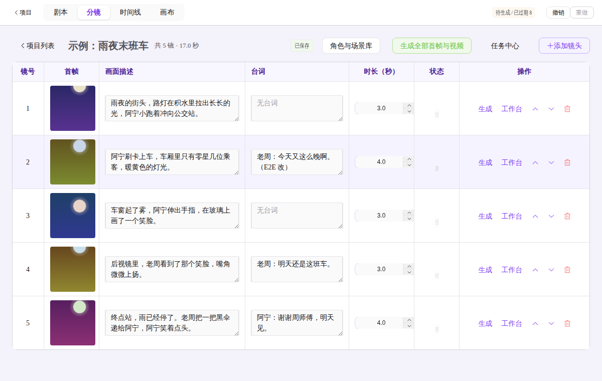
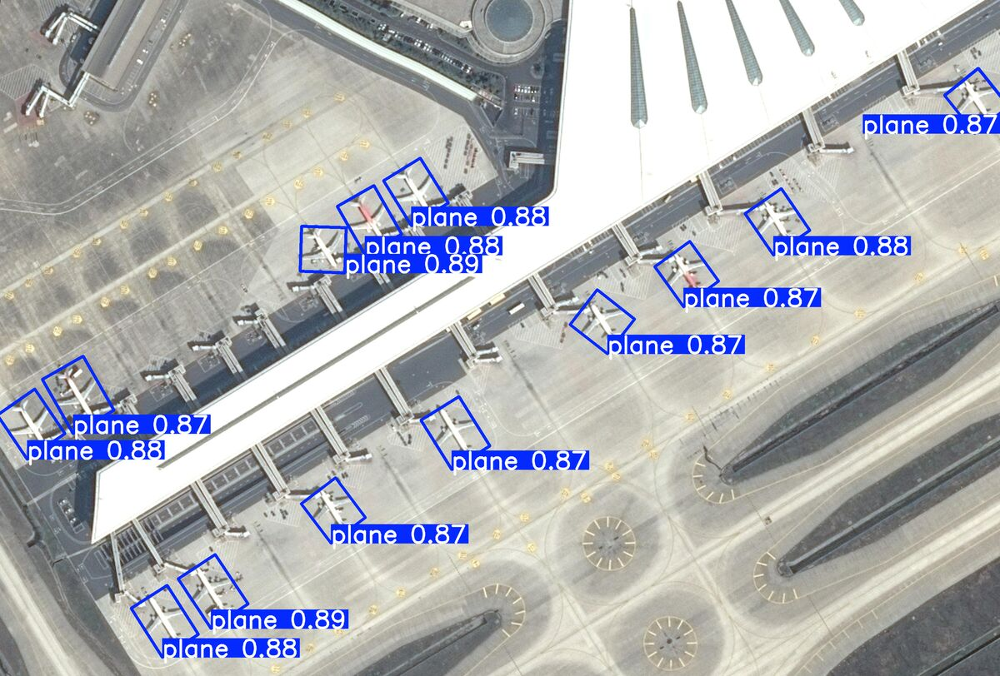

MARS Agent
遥感技术让高分辨率对地观测广泛用于环境监测、城市规划和灾害救援，但遥感图像目标尺度多变、空间与光谱信息密集，解读很难。MARS（Multi-model Agent for Remote Sensing，遥感多模型智能体）借鉴人眼“先快速搜索、再聚焦细看、用先验知识验证”的方式，对图像做细致解读。
个人主页
软件工程师 · 智能体 AI、强化学习、视觉语言模型
你好，我是 Weijie，一名专注于智能体 AI（Agent AI）、强化学习（RL）和视觉语言模型（VLM）的软件工程师。我喜欢像搭乐高一样，用简单的技术解决复杂的问题，打造稳定可靠的系统，并和大家一起做有影响力的产品。

开发中
一言入窑，百炼成剧。一款桌面端 AI 短剧创作工具：从一句故事生成剧本与分镜，出图、出视频、配音、加字幕，在时间线上剪辑后本机导出成片。剧本、分镜、时间线、画布四个视图共用同一份项目数据。
查看作品介绍 →遥感技术让高分辨率对地观测广泛用于环境监测、城市规划和灾害救援，但遥感图像目标尺度多变、空间与光谱信息密集，解读很难。MARS（Multi-model Agent for Remote Sensing，遥感多模型智能体）借鉴人眼“先快速搜索、再聚焦细看、用先验知识验证”的方式，对图像做细致解读。
灾害响应与救援需要快速、准确地识别关键设施和受灾区域。本项目在 DOTA 数据集上比较了三种模型：从零实现的 YOLO V1、预训练的 YOLO V11（旋转框）和迁移学习的 Faster R-CNN（水平框）。实验表明 YOLO V11 在 DOTA 上表现最好。

MapReduce 是一个出色的分布式计算框架，能让大量廉价、低功耗的服务器协同工作，通过可定制的 Mapper 与 Reducer 处理大多数大数据挖掘任务。本项目仿照 MapReduce 实现了一个轻量的并行计算框架，并用它找出飞行次数最多的乘客。
数据科学融合了统计学、计算机科学和算法。这个项目整理了数据科学相关的知识与练习，帮助计算机爱好者学习；也收录了我在校期间的课程作业和 LeetCode 练习。